Rodinná rezidencia s veľkorysou privátnou záhradou
Staré Mesto, Bratislava
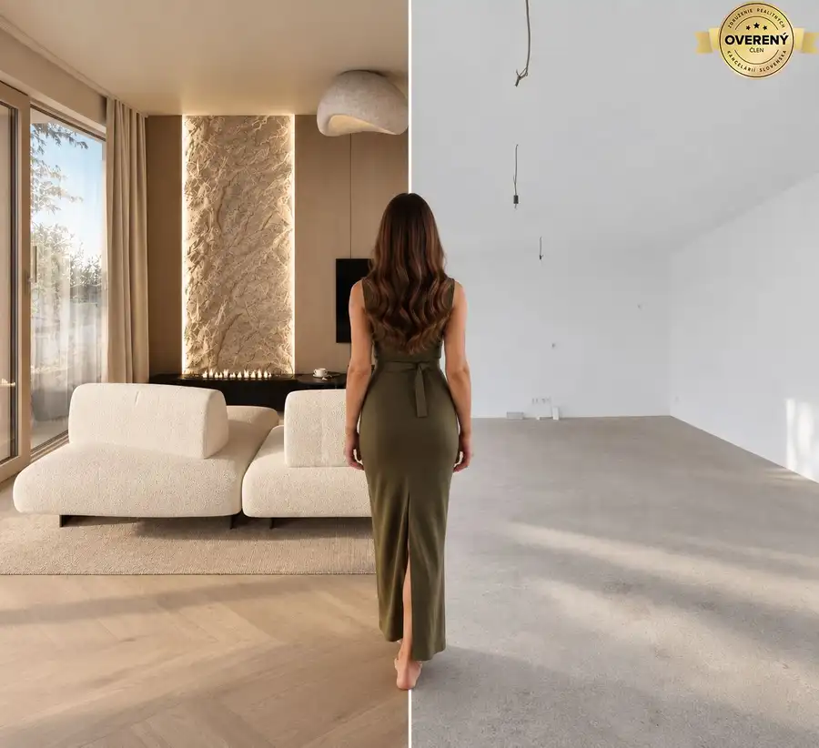
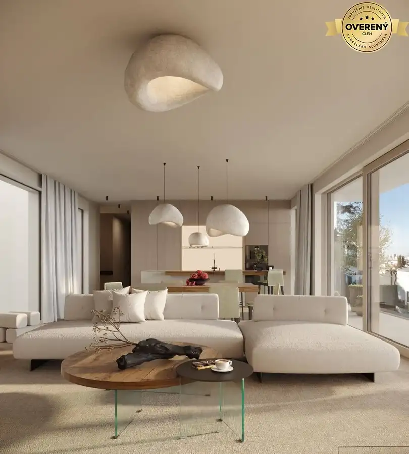
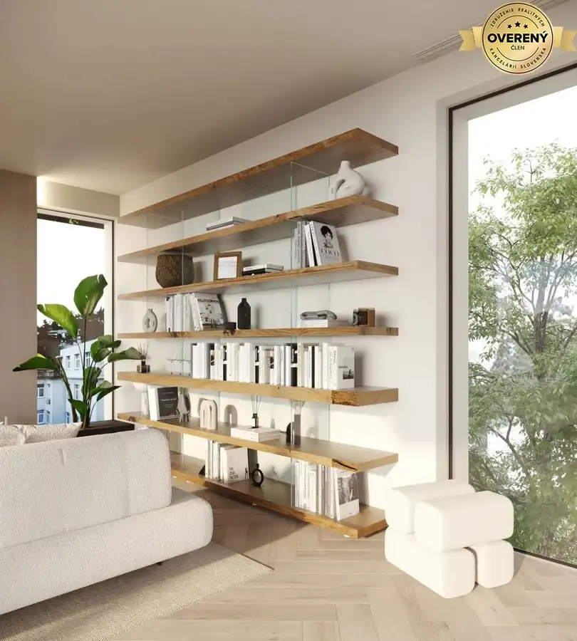
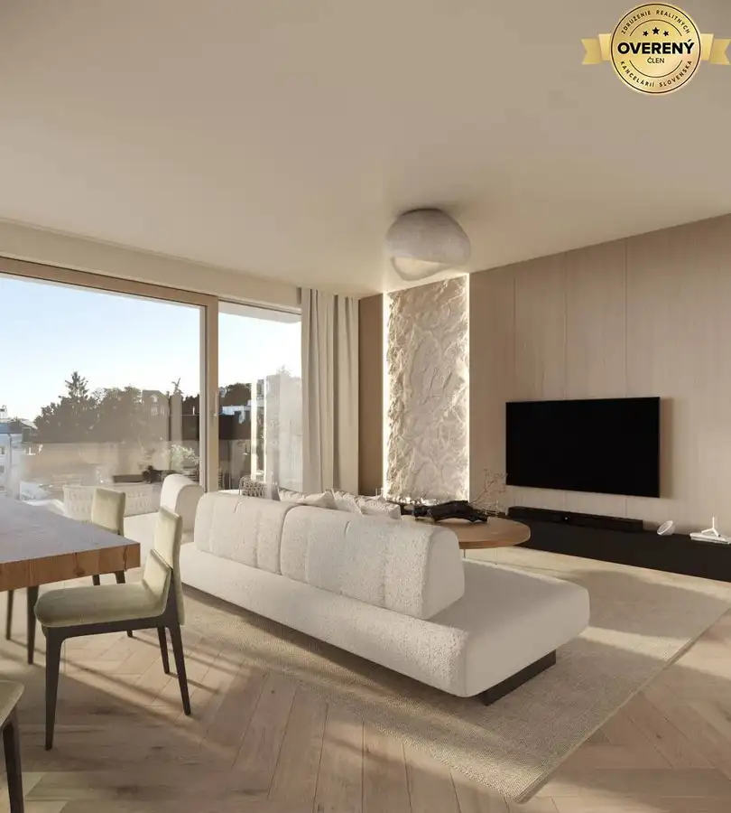
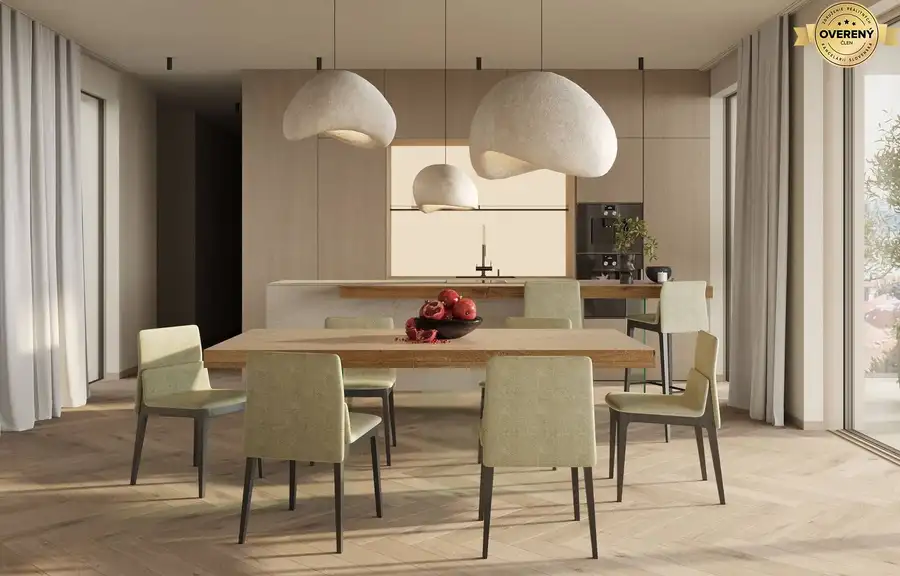
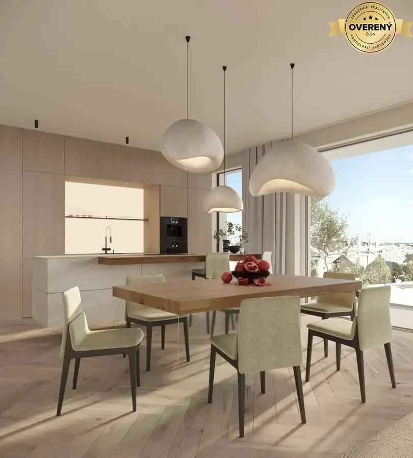
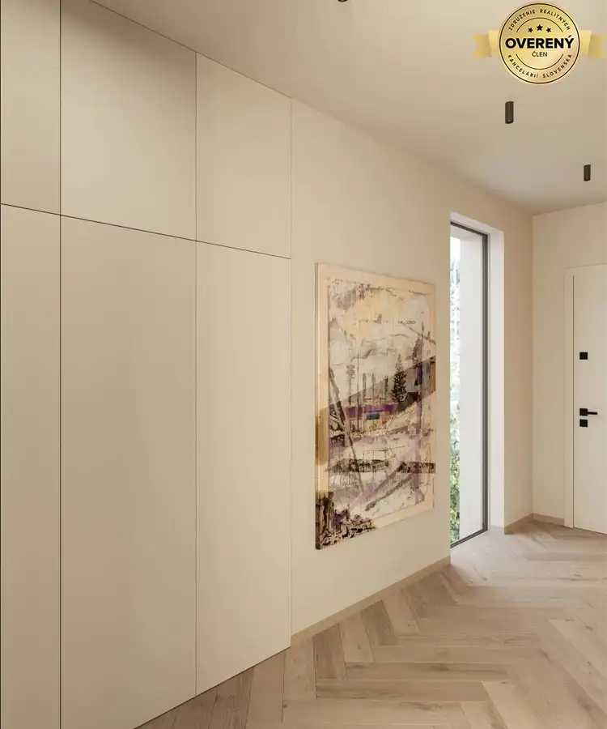
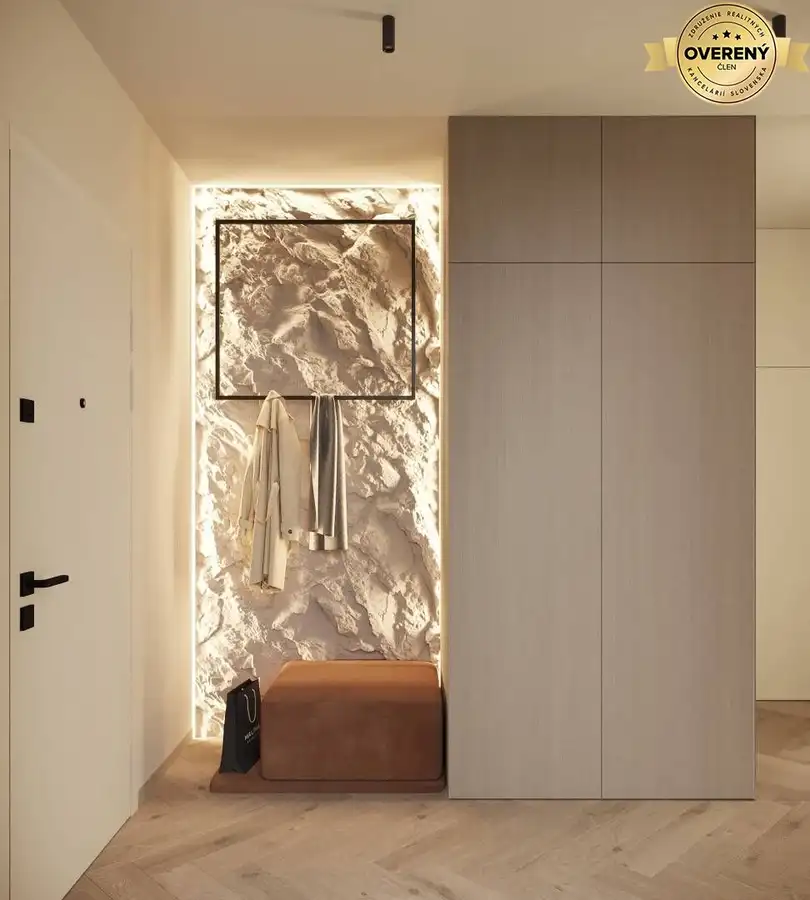
- Dispozícia4-izbový
- Plocha130.48 m²
- Poschodie2. z 5
- Stavpôvodný
O nehnuteľnosti
Hľadáte pre svoju rodinu domov, ktorý ponúka priestor vily a bezpečie luxusného bytového domu? Ponúkaný 4-izbový byt v komornom projekte Gledíčia je navrhnutý pre tých, ktorí vyžadujú nadštandardnú metráž interiéru a priamy kontakt s vlastným kúskom prírody v srdci pokojnej štvrte.
Tento výnimočný byt ponúka veľkorysú vnútornú plochu 130,48 m², ktorá je ideálne rozvrhnutá pre potreby modernej rodiny. Skutočným unikátom je však privátna záhrada s terasou o rozlohe cca 165 m².
Tento rozsiahly exteriér obklopuje byt z viacerých strán a vytvára tak bezpečnú oázu pre relax, detské hry či večerné posedenia pod korunami stromov Vlčkovej ulice.
Technológie pre zdravý a tichý domov
Projekt Gledícia so svojimi ôsmimi bytmi predstavuje technologickú špičku, ktorá zabezpečuje vysoký komfort bez vizuálnych kompromisov:
- Neviditeľná klíma: Systém stropného chladenia a podlahového vykurovania napojený na vlastné tepelné čerpadlo (vzduch-voda). Užite si dokonalú teplotu po celý rok bez prievanu a hučiacich klimatizačných jednotiek.
- Architektúra priestoru: Svetlá výška stropov 2,8 m a prémiové veľkoformátové hliníkové okná systému Heroal dodávajú interiéru vzdušnosť a prepájajú ho s okolitou záhradou.
- Súkromie a bezpečnosť: Vonkajšie hliníkové žalúzie a predpríprava na inteligentné elektronické zabezpečenie objektu zaručujú pocit maximálneho bezpečia.
Príslušenstvo zahrnuté v cene: Aby bol váš rodinný komfort kompletný, k bytu prislúcha pivničná kobka a 2x parkovacie miesto priamo v podzemnej garáži bytového domu.
Lokalita: Bývanie na najlepšej adrese
Vlčkova ulica nepotrebuje reklamu. Je to adresa, kde sa ticho Horského parku stretáva s prestížou Starého Mesta. Pešia dostupnosť k Slavínu a do historického centra robí z tejto lokality ideálne miesto pre rodinný život s trvalou hodnotou investície.
Ponúkaný byt v projekte Gledícia je jednou z mála príležitostí vlastniť v tejto štvrti novostavbu s takmer 170 m² vlastným pozemkom. Je to voľba pre tých, ktorí hľadajú kvalitu bez kompromisov.
Prejdite si s nami na privátnej obhliadke všetky benefity tejto nehnuteľnosti. Tešíme sa na Vás.
Cena: dohodou
Bližšie informácie na a na
Parametre
- Úžitková plocha
- 130.48 m²
- Poschodie
- 2
- Počet poschodí
- 5
- Počet izieb
- 4
- Stav
- pôvodný
- Status
- aktívne
- Kúpeľňa
- nie
- Vykurovanie
- áno
- Balkón
- nie
- Lódžia
- nie
- Terasa
- áno
- Garáž
- nie
- Parkovanie
- áno
- Postavené z
- Zmiešané
- Energetický certifikát
- nie
- Predzáhradka
- nie
- Novostavba
- áno
- Dátum zverejnenia
- 2026-02-10
Kde to je
Mohlo by Vás zaujímať
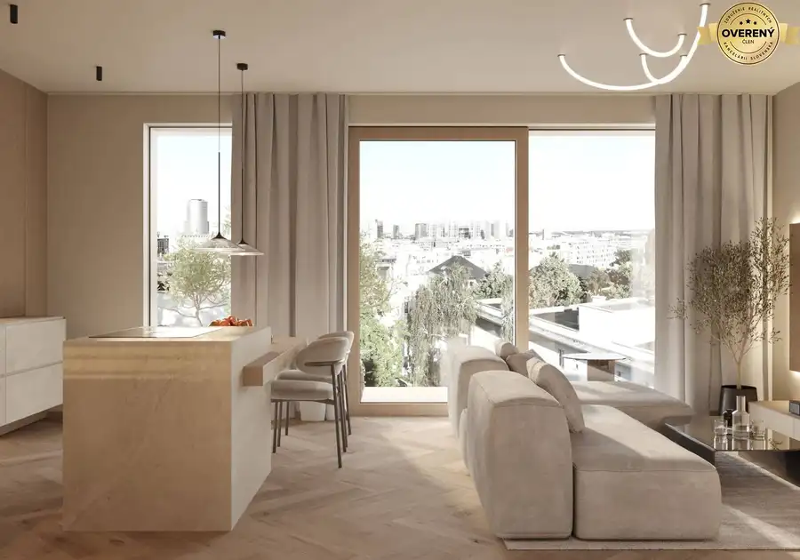
BytNové 999 999 999 €Moderný 2-izbový mestský byt s priestrannou terasou Staré Mesto, Bratislava 2-izbový60.2 m²1. podlažie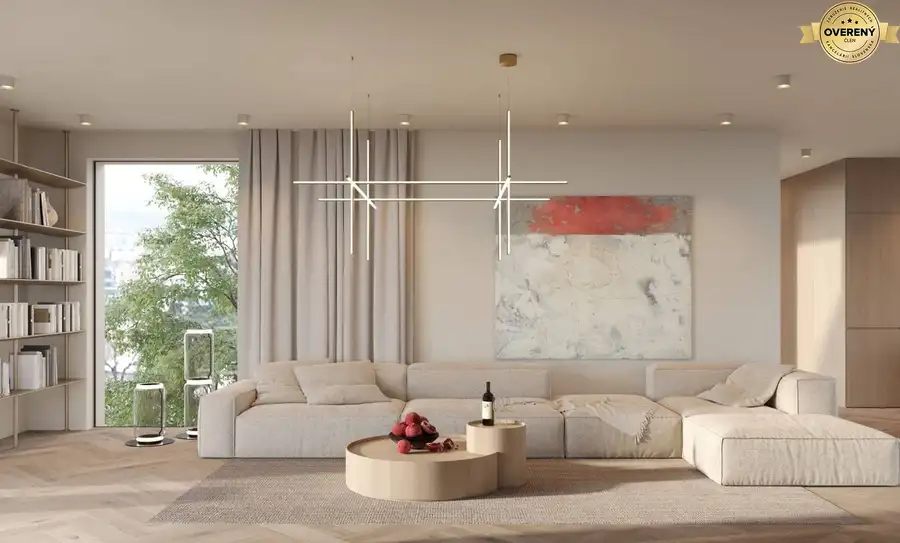
BytNové 999 999 999 €Vrcholné bývanie v priestrannom 4-izb. mezonete na exluzívnej adrese Staré Mesto, Bratislava 4-izbový167 m²4. podlažie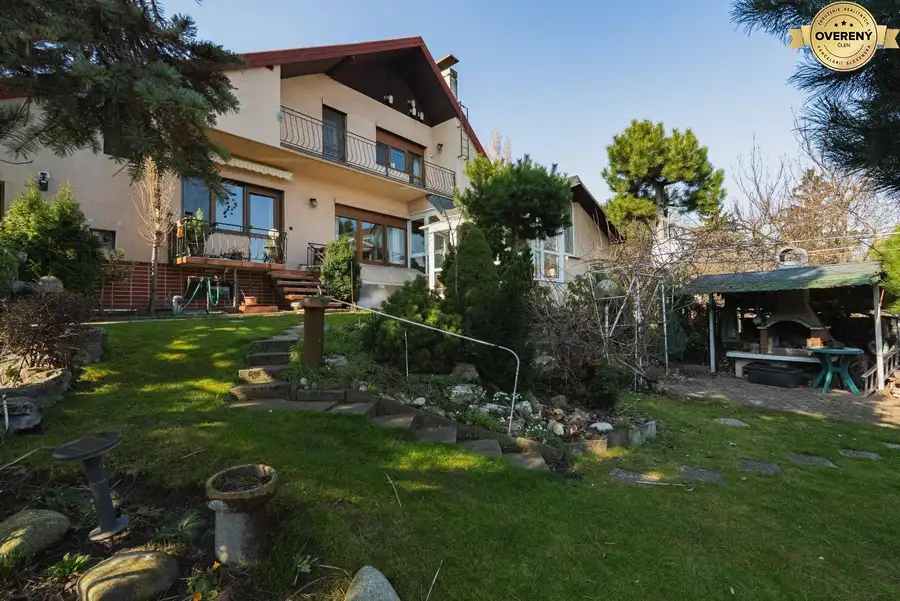
Rodinné domyNové 534 000 €Nadštandardný rodinný dom v centre Bernolákova Bernolákovo 428 m²